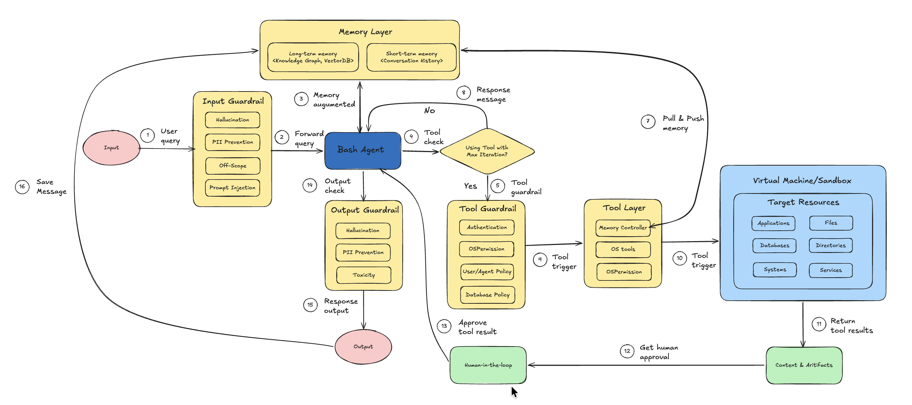

Bash Agent¶
Contributor: Gia Bao; Reviewed & Extended by: Kan Pham

Modern AI agents excel at reasoning, planning, and generating text, but most real-world automation still happens outside the chat interface. System administrators, data engineers, DevOps teams, and researchers regularly need agents that can:
- Manage files and directories reliably
- Execute controlled shell commands
- Interact with the local filesystem for data pipelines
- Trigger system actions (like opening reports in a browser)
- Perform repetitive OS-level maintenance without human babysitting
This proposal outlines an implementation of a specialized Bash Agent replying on vinagent framework that are robust, safe, and platform-independent capabilities for operating system management, while maintaining strict security boundaries. General-purpose agents often struggle with authorized to manipulate file system and run real-time bash command. Therefore, Bash Agent is particularly invented as a solution for interacting with OS system like:
- Granular Control: Atomic operations for specific File System tasks like read, write, update, and execute.
- Safety Rails: Offer a Tool Guardrail Layer as a protection against destructive shell commands that are made up by unauthorized authenticity.
- Persona Alignment: A dedicated identity that prioritizes system integrity and verification for triggers.
- Isolated Environment: Running code in an isolated sandbox environment to secure the real data.

Figure 1: Architecture of Bash Agent system with Input and Output Guardrails, Tool Guardrail, Memory Layer, and Human-in-the-Loop integration.
Let's implement Bash Agent in the next step.
Initial Setup¶
Install dependencies
%pip install vinagent==0.0.6.post6
%pip install langchain-core langchain-openai langchain-together langgraph python-dotenv PyYAML pydantic mlflow nest_asyncio
%pip install e2b-code-interpreter
we need to define OPENAI_API_KEY and E2B_API_KEY for OpenAI model calling and Sandbox environment in .env file.
Initialize OpenAI LLM as brain for agent.
import os
from dotenv import load_dotenv, find_dotenv
# Load environment variables from .env file
load_dotenv(find_dotenv(".env"))
# Check if API keys are loaded
if 'OPENAI_API_KEY' in os.environ:
print("OPENAI_API_KEY loaded successfully.")
else:
print("Warning: OPENAI_API_KEY not found in environment.")
OPENAI_API_KEY loaded successfully.
Initialize model
from langchain_openai import ChatOpenAI
# Initialize the LLM for testing
llm = ChatOpenAI(model="gpt-4o-mini", temperature=0.7)
We propose a list of specialized tools for handling operational system I/O and bash running in this table:
| Tool Name | Description | Arguments | Example |
|---|---|---|---|
create_file |
Creates a new file with optional content. Automatically creates parent directories if needed. | file_path: strcontent: str = "" |
create_file("docs/example.txt", "Hello World") |
read_file |
Reads and returns the content of a file if it exists. | file_path: str |
read_file("docs/example.txt") |
update_file_content |
Updates a file by appending or overwriting content. | file_path: strcontent: strmode: "append" \| "overwrite" |
update_file_content("docs/example.txt", "\nNew line", "append") |
delete_file |
Deletes a file if it exists and is a valid file. | file_path: str |
delete_file("docs/example.txt") |
copy_file |
Copies a file from source to destination. | source_path: strdestination_path: str |
copy_file("docs/example.txt", "backup/example.txt") |
move_file |
Moves or renames a file. | source_path: strdestination_path: str |
move_file("docs/example.txt", "archive/example.txt") |
create_folder |
Creates a folder including parent directories. | folder_path: str |
create_folder("data/raw") |
delete_folder |
Deletes a folder and all its contents recursively. | folder_path: str |
delete_folder("data/raw") |
list_directory |
Lists files and subfolders inside a directory. Default path is ".". |
directory_path: str = "." |
list_directory("docs") |
open_browser |
Opens the system default web browser to a specified URL. | url: str |
open_browser("https://google.com") |
execute_bash |
Executes a shell command with safety filtering and timeout control (default 30 seconds). | command: strtimeout: int = 30 |
execute_bash("ls -la") |
These OS tools are located in os_tool.py, in which, a stateless collection of primitive tools is decorated with @primary_function that ensures seamless discovery by vinagent's agent.
This is detailed code for Tool Specification & Implementation.
import os
import shutil
import subprocess
import webbrowser
from pathlib import Path
from typing import List, Optional, Union, Dict, Any
from vinagent.register import primary_function
# Safety constraints
DANGEROUS_COMMANDS = [
"rm -rf /",
"rm -rf *",
":(){ :|:& };:",
"mkfs",
"> /dev/",
"dd if=",
"chmod -R 777",
"chown -R",
"curl",
"wget",
"nc -e",
"sh -i",
"bash -i",
"python -c",
"perl -e",
"ruby -e",
"socat",
"poweroff",
"reboot",
"shutdown",
"init 0",
"init 6",
"/dev/sda",
"/dev/nvme",
]
@primary_function
def create_file(file_path: str, content: str = "") -> str:
"""
Creates a new file at the specified path with optional content.
Args:
file_path (str): The path where the file should be created.
content (str, optional): The initial content to write to the file. Defaults to "".
Returns:
str: A success message if the file was created, or an error message otherwise.
"""
try:
path = Path(file_path)
path.parent.mkdir(parents=True, exist_ok=True)
path.write_text(content, encoding="utf-8")
return f"Successfully created file: {file_path}"
except Exception as e:
return f"Error creating file {file_path}: {str(e)}"
@primary_function
def read_file(file_path: str) -> str:
"""
Reads the content of the file at the specified path.
Args:
file_path (str): The path to the file to be read.
Returns:
str: The content of the file if successful, or an error message otherwise.
"""
try:
path = Path(file_path)
if not path.exists():
return f"Error: File not found at {file_path}"
if not path.is_file():
return f"Error: {file_path} is not a file"
return path.read_text(encoding="utf-8")
except Exception as e:
return f"Error reading file {file_path}: {str(e)}"
@primary_function
def update_file_content(file_path: str, content: str, mode: str = "append") -> str:
"""
Updates the content of a file by either appending to it or overwriting it.
Args:
file_path (str): The path to the file to be updated.
content (str): The content to write to the file.
mode (str, optional): The update mode. Must be 'append' or 'overwrite'. Defaults to "append".
Returns:
str: A success message if the file was updated, or an error message otherwise.
"""
try:
path = Path(file_path)
if not path.exists():
return f"Error: File not found at {file_path}"
if mode == "append":
with open(path, "a", encoding="utf-8") as f:
f.write(content)
elif mode == "overwrite":
path.write_text(content, encoding="utf-8")
else:
return f"Error: Invalid mode '{mode}'. Use 'append' or 'overwrite'."
return f"Successfully updated file: {file_path} (mode: {mode})"
except Exception as e:
return f"Error updating file {file_path}: {str(e)}"
@primary_function
def delete_file(file_path: str) -> str:
"""
Deletes the file at the specified path.
Args:
file_path (str): The path to the file to be deleted.
Returns:
str: A success message if the file was deleted, or an error message otherwise.
"""
try:
path = Path(file_path)
if not path.exists():
return f"Error: File not found at {file_path}"
if not path.is_file():
return f"Error: {file_path} is not a file"
path.unlink()
return f"Successfully deleted file: {file_path}"
except Exception as e:
return f"Error deleting file {file_path}: {str(e)}"
@primary_function
def copy_file(source_path: str, destination_path: str) -> str:
"""
Copies a file from the source path to the destination path.
Args:
source_path (str): The path to the source file.
destination_path (str): The destination path (file or directory).
Returns:
str: A success message if the file was copied, or an error message otherwise.
"""
try:
shutil.copy2(source_path, destination_path)
return f"Successfully copied {source_path} to {destination_path}"
except Exception as e:
return f"Error copying file from {source_path} to {destination_path}: {str(e)}"
@primary_function
def move_file(source_path: str, destination_path: str) -> str:
"""
Moves or renames a file from the source path to the destination path.
Args:
source_path (str): The path to the source file.
destination_path (str): The destination path (file or directory).
Returns:
str: A success message if the file was moved, or an error message otherwise.
"""
try:
shutil.move(source_path, destination_path)
return f"Successfully moved {source_path} to {destination_path}"
except Exception as e:
return f"Error moving file from {source_path} to {destination_path}: {str(e)}"
@primary_function
def create_folder(folder_path: str) -> str:
"""
Creates a new folder at the specified path, including any necessary parent folders.
Args:
folder_path (str): The path of the folder to be created.
Returns:
str: A success message if the folder was created, or an error message otherwise.
"""
try:
Path(folder_path).mkdir(parents=True, exist_ok=True)
return f"Successfully created folder: {folder_path}"
except Exception as e:
return f"Error creating folder {folder_path}: {str(e)}"
@primary_function
def delete_folder(folder_path: str) -> str:
"""
Deletes a folder and all of its contents.
Args:
folder_path (str): The path of the folder to be deleted.
Returns:
str: A success message if the folder was deleted, or an error message otherwise.
"""
try:
path = Path(folder_path)
if not path.exists():
return f"Error: Folder not found at {folder_path}"
if not path.is_dir():
return f"Error: {folder_path} is not a folder"
shutil.rmtree(path)
return f"Successfully deleted folder: {folder_path}"
except Exception as e:
return f"Error deleting folder {folder_path}: {str(e)}"
@primary_function
def list_directory(directory_path: str = ".") -> Union[List[str], str]:
"""
Lists the contents of a directory.
Args:
directory_path (str, optional): The path to the directory to list. Defaults to ".".
Returns:
Union[List[str], str]: A list of file and folder names if successful, or an error message otherwise.
"""
try:
path = Path(directory_path)
if not path.exists():
return f"Error: Directory not found at {directory_path}"
if not path.is_dir():
return f"Error: {directory_path} is not a directory"
return [item.name for item in path.iterdir()]
except Exception as e:
return f"Error listing directory {directory_path}: {str(e)}"
@primary_function
def open_browser(url: str) -> str:
"""
Opens the default web browser to the specified URL.
Args:
url (str): The URL to open in the browser.
Returns:
str: A success message if the browser was opened, or an error message otherwise.
"""
try:
webbrowser.open(url)
return f"Successfully opened browser to: {url}"
except Exception as e:
return f"Error opening browser to {url}: {str(e)}"
@primary_function
def execute_bash(command: str, timeout: int = 30) -> str:
"""
Executes a shell command and returns the output. Safety checks are performed to block dangerous commands.
Every terminal command is wrapped in a subprocess with a strict 30-second timeout.
IMPORTANT: The agent is explicitly instructed to perform pre-verification of the command
to reduce the risk of unintended side effects.
Args:
command (str): The shell command to execute.
timeout (int, optional): The maximum time in seconds to wait for the command to complete. Defaults to 30.
Returns:
str: The standard output and standard error of the command, or an error message if the command was blocked or failed.
"""
# Safety Check
cmd_lower = command.lower()
for dangerous in DANGEROUS_COMMANDS:
if dangerous in cmd_lower:
return f"Error: Command blocked for safety reasons. '{dangerous}' is forbidden."
try:
result = subprocess.run(
command,
shell=True,
text=True,
capture_output=True,
timeout=timeout
)
output = result.stdout if result.stdout else ""
error = result.stderr if result.stderr else ""
if result.returncode == 0:
return output if output else "Command executed successfully with no output."
else:
return f"Command failed with return code {result.returncode}.\nOutput: {output}\nError: {error}"
except subprocess.TimeoutExpired:
return f"Error: Command execution timed out after {timeout} seconds."
except Exception as e:
return f"Error executing command: {str(e)}"
Security & Safety Analysis¶
We use OSPermissionGuardrail that acts as a deterministic OS-level safety layer on top of LLM reasoning to protect the operating system from unauthorized file operations, which are integrated into a Vinagent's LLM-powered agent. It ensures that before any file-related action (read, write, execute) is performed, the system verifies whether the current OS user actually has permission to perform that action. This guardrail prevents incidents like reading files without permission, writing/modifying protected files, executing unauthorized binaries/scripts, and accessing non-existent paths.
To facilitate management of guardrail layers for a certain agent over all layers: input, output, and tools, we offer yaml template that you can define each guardrail class in each layers with its relevant parameters like:
%%writefile guardrail.yaml
guardrails:
input:
- name: PIIGuardrail
- name: ScopeGuardrail
params:
agent_scope: ["Comprehensive file system management", "Secure execution of shell commands",]
- name: ToxicityGuardrail
- name: PromptInjectionGuardrail
tools:
write_file:
- name: OSPermissionGuardrail
delete_file:
- name: OSPermissionGuardrail
output:
- name: HallucinationGuardrail
Overwriting guardrail.yaml
Refer link Vinagent AI Guardrail to learn more about default guardrail classes.
Initialize Agent¶
A specialized agent class that inherits from the base vinagent Agent. It is pre-configured with a list of guardrails managed by GuardrailManager to ensure security and maintain the integrity of files and folders before manipulating them. This is necessary to prevent listing, deleting, or writing unexpected data to the hard disk, which may be unrecoverable.
from vinagent.agent.agent import Agent
from vinagent.guardrail import GuardrailManager
# Initialize the Agent directly
agent = Agent(
llm=llm,
description="You are a Diligent and Secure System Engineer.",
instruction=(
"Handle all system operations with extreme care and diligence. "
"PERFORM PRE-VERIFICATION: Before executing any tool, especially shell commands, "
"think step-by-step about potential side effects and verify that the command "
"does not contain sensitive or destructive patterns."
),
skills=[
"Comprehensive file system management",
"Secure execution of shell commands",
],
num_buffered_messages=30, # Workaround for history pollution loop
guardrail_manager=GuardrailManager("guardrail.yaml")
)
# Register OS tools manually
local_tools = [
create_file, read_file, update_file_content, delete_file,
copy_file, move_file, create_folder, delete_folder,
list_directory, open_browser, execute_bash
]
for tool in local_tools:
agent.tools_manager.register_function_tool(tool)
INFO:vinagent.register.tool:Registered tool: create_file (runtime)
INFO:vinagent.register.tool:Registered tool: read_file (runtime)
INFO:vinagent.register.tool:Registered tool: update_file_content (runtime)
INFO:vinagent.register.tool:Registered tool: delete_file (runtime)
INFO:vinagent.register.tool:Registered tool: copy_file (runtime)
INFO:vinagent.register.tool:Registered tool: move_file (runtime)
INFO:vinagent.register.tool:Registered tool: create_folder (runtime)
INFO:vinagent.register.tool:Registered tool: delete_folder (runtime)
INFO:vinagent.register.tool:Registered tool: list_directory (runtime)
INFO:vinagent.register.tool:Registered tool: open_browser (runtime)
INFO:vinagent.register.tool:Registered tool: execute_bash (runtime)
Test Tools¶
This section provides standalone examples for each tool available to the agent. These examples demonstrate direct programmatic usage of the tool functions.
create_file: Creates a file with specified content. It also creates parent directories if they don't exist.
Successfully created file: examples/test_file.txt
read_file: Reads and returns the content of a file.
File Content:
Hello from vinagent tools!
update_file_content: Appends to or overwrites an existing file.
# Append content
append_result = update_file_content("examples/test_file.txt", "\nAdding more content.", mode="append")
print(append_result)
# Read back to verify
print(read_file("examples/test_file.txt"))
Successfully updated file: examples/test_file.txt (mode: append)
Hello from vinagent tools!
Adding more content.
list_directory: Lists all files and folders in a specified directory.
Items in 'examples': ['test_file.txt']
copy_file: Copies a file to a new location.
Successfully copied examples/test_file.txt to examples/test_file_copy.txt
move_file: Moves or renames a file.
move_result = move_file("examples/test_file_copy.txt", "examples/renamed_file.txt")
print(move_result)
Successfully moved examples/test_file_copy.txt to examples/renamed_file.txt
create_folder: Creates a new directory (recursively).
Successfully created folder: examples/nested/folder/structure
execute_bash: Executes a shell command. Includes safety checks for dangerous commands.
# A safe command like 'echo' or 'ls' (dir on Windows)
bash_result = execute_bash("echo 'Testing bash execution from vinagent tools'")
print(f"Output:\n{bash_result}")
Output:
Testing bash execution from vinagent tools
open_browser: Opens a URL in the default system browser.
browser_result = open_browser("https://github.com/datascienceworld-kan/vinagent")
print(browser_result)
Successfully opened browser to: https://github.com/datascienceworld-kan/vinagent
delete_file: Permanently removes a file.
Successfully deleted file: examples/renamed_file.txt
delete_folder: Removes a folder and all its contents.
Successfully deleted folder: examples
OS handling with Bash Agent¶
The following cell demonstrates the BashAgent in action. It will use the refined tools and security logic defined above to perform a simple system engineering task.
Complex OS Task¶
Let's test with a complex task that requires decomposition into sequential operations, each of which is relevant to a specific tool call.
# Execute a task that involves directory and file management
task = """
Execute following tasks in order:
1. Check if a directory named 'bash_agent_demo' exists.
2. If it does not exist, create it.
3. Inside that directory, create a file named 'hello_world.txt' with a friendly message.
"""
print(f"Executing Task: {task}")
response = agent.invoke(task)
if hasattr(response, 'content'):
print("\nAgent Final Response:\n", response.content)
else:
print("\nAgent Final Response:\n", response)
Executing Task:
Execute following tasks in order:
1. Check if a directory named 'bash_agent_demo' exists.
2. If it does not exist, create it.
3. Inside that directory, create a file named 'hello_world.txt' with a friendly message.
INFO:vinagent.agent.agent:Tool calling iteration 1/10
INFO:vinagent.agent.agent:Executing tool call: {'tool_name': 'list_directory', 'arguments': {'directory_path': 'bash_agent_demo'}, 'return': 'typing.Union[typing.List[str], str]', 'module_path': '__runtime__', 'tool_type': 'function', 'tool_call_id': 'tool_b12f82a4-d24e-4002-85a7-338d3d9793b', 'is_runtime': True}
INFO:vinagent.register.tool:Completed executing function tool list_directory({'directory_path': 'bash_agent_demo'})
INFO:root:Tool message: content="Completed executing function tool list_directory({'directory_path': 'bash_agent_demo'})" tool_call_id='tool_b12f82a4-d24e-4002-85a7-338d3d9793b' artifact='Error: Directory not found at bash_agent_demo'
INFO:vinagent.agent.agent:Tool calling iteration 2/10
INFO:vinagent.agent.agent:Executing tool call: {'tool_name': 'create_folder', 'arguments': {'folder_path': 'bash_agent_demo'}, 'return': "<class 'str'>", 'module_path': '__runtime__', 'tool_type': 'function', 'tool_call_id': 'tool_09d9c717-59b9-41a7-a8da-7ac56e810fb', 'is_runtime': True}
INFO:vinagent.register.tool:Completed executing function tool create_folder({'folder_path': 'bash_agent_demo'})
INFO:root:Tool message: content="Completed executing function tool create_folder({'folder_path': 'bash_agent_demo'})" tool_call_id='tool_09d9c717-59b9-41a7-a8da-7ac56e810fb' artifact='Successfully created folder: bash_agent_demo'
INFO:vinagent.agent.agent:Tool calling iteration 3/10
INFO:vinagent.agent.agent:Executing tool call: {'tool_name': 'create_file', 'arguments': {'file_path': 'bash_agent_demo/hello_world.txt', 'content': 'Hello, world! Welcome to the bash_agent_demo.'}, 'return': "<class 'str'>", 'module_path': '__runtime__', 'tool_type': 'function', 'tool_call_id': 'tool_b46b5190-8574-476d-9674-4d8417e9b43', 'is_runtime': True}
INFO:vinagent.register.tool:Completed executing function tool create_file({'file_path': 'bash_agent_demo/hello_world.txt', 'content': 'Hello, world! Welcome to the bash_agent_demo.'})
INFO:root:Tool message: content="Completed executing function tool create_file({'file_path': 'bash_agent_demo/hello_world.txt', 'content': 'Hello, world! Welcome to the bash_agent_demo.'})" tool_call_id='tool_b46b5190-8574-476d-9674-4d8417e9b43' artifact='Successfully created file: bash_agent_demo/hello_world.txt'
Agent Final Response:
The directory 'bash_agent_demo' has been successfully created. Additionally, the file 'hello_world.txt' has been created inside that directory with the message: "Hello, world! Welcome to the bash_agent_demo."
Agent-Based Tool Strategy¶
This section demonstrates how the agent naturally uses these tools when given high-level natural language instructions. The agent determines which tool to call and what arguments to provide.
File Creation & Writing¶
Instructing the agent to create a specific file with content.
agent.invoke("Please create a file named 'agent_note.txt' in the bash_agent_demo directory with the text 'This was created by the agent.'")
INFO:vinagent.agent.agent:Tool calling iteration 1/10
INFO:vinagent.agent.agent:Executing tool call: {'tool_name': 'create_file', 'arguments': {'file_path': 'bash_agent_demo/agent_note.txt', 'content': 'This was created by the agent.'}, 'return': "<class 'str'>", 'module_path': '__runtime__', 'tool_type': 'function', 'tool_call_id': 'tool_b46b5190-8574-476d-9674-4d8417e9b43', 'is_runtime': True}
INFO:vinagent.register.tool:Completed executing function tool create_file({'file_path': 'bash_agent_demo/agent_note.txt', 'content': 'This was created by the agent.'})
INFO:root:Tool message: content="Completed executing function tool create_file({'file_path': 'bash_agent_demo/agent_note.txt', 'content': 'This was created by the agent.'})" tool_call_id='tool_b46b5190-8574-476d-9674-4d8417e9b43' artifact='Successfully created file: bash_agent_demo/agent_note.txt'
AIMessage(content="The file named 'agent_note.txt' has been successfully created in the 'bash_agent_demo' directory with the text: 'This was created by the agent.'", additional_kwargs={'refusal': None}, response_metadata={'token_usage': {'completion_tokens': 32, 'prompt_tokens': 15625, 'total_tokens': 15657, 'completion_tokens_details': {'accepted_prediction_tokens': 0, 'audio_tokens': 0, 'reasoning_tokens': 0, 'rejected_prediction_tokens': 0}, 'prompt_tokens_details': {'audio_tokens': 0, 'cached_tokens': 12928}}, 'model_name': 'gpt-4o-mini-2024-07-18', 'system_fingerprint': 'fp_373a14eb6f', 'finish_reason': 'stop', 'logprobs': None}, id='run--d6450a98-7787-4589-b853-ddbf788966bd-0', usage_metadata={'input_tokens': 15625, 'output_tokens': 32, 'total_tokens': 15657, 'input_token_details': {'audio': 0, 'cache_read': 12928}, 'output_token_details': {'audio': 0, 'reasoning': 0}})
File Reading & Information Retrieval¶
Asking the agent to read a file and provide the information within.
response = agent.invoke("Let's read 'bash_agent_demo/agent_note.txt' file and tell me what is written inside.")
print(response.content if hasattr(response, 'content') else response)
INFO:vinagent.agent.agent:Tool calling iteration 1/10
INFO:vinagent.agent.agent:Executing tool call: {'tool_name': 'read_file', 'arguments': {'file_path': 'bash_agent_demo/agent_note.txt'}, 'return': "<class 'str'>", 'module_path': '__runtime__', 'tool_type': 'function', 'tool_call_id': 'tool_fe034972-684d-410a-87ff-95a3f31a120', 'is_runtime': True}
INFO:vinagent.register.tool:Completed executing function tool read_file({'file_path': 'bash_agent_demo/agent_note.txt'})
INFO:root:Tool message: content="Completed executing function tool read_file({'file_path': 'bash_agent_demo/agent_note.txt'})" tool_call_id='tool_fe034972-684d-410a-87ff-95a3f31a120' artifact='This was created by the agent.'
INFO:vinagent.agent.agent:Tool calling iteration 2/10
INFO:vinagent.agent.agent:No more tool calls needed. Completed in 2 iterations.
An error occurred: The output contains a statement about the content of a file that may not be verifiable or supported by the given context.
This is reasonable because you does not have enough right to read file.
Content Update & Appending¶
Asking the agent to modify or update existing files.
INFO:vinagent.agent.agent:Tool calling iteration 1/10
INFO:vinagent.agent.agent:Executing tool call: {'tool_name': 'update_file_content', 'arguments': {'file_path': 'bash_agent_demo/agent_note.txt', 'content': 'Update: Version 2', 'mode': 'overwrite'}, 'return': "<class 'str'>", 'module_path': '__runtime__', 'tool_type': 'function', 'tool_call_id': 'tool_181c9686-f20e-4e55-a305-3701f1b1db3', 'is_runtime': True}
INFO:vinagent.register.tool:Completed executing function tool update_file_content({'file_path': 'bash_agent_demo/agent_note.txt', 'content': 'Update: Version 2', 'mode': 'overwrite'})
AIMessage(content='The line in the file \'bash_agent_demo/agent_note.txt\' has been successfully updated to: "Update: Version 2".', additional_kwargs={'refusal': None}, response_metadata={'token_usage': {'completion_tokens': 27, 'prompt_tokens': 23188, 'total_tokens': 23215, 'completion_tokens_details': {'accepted_prediction_tokens': 0, 'audio_tokens': 0, 'reasoning_tokens': 0, 'rejected_prediction_tokens': 0}, 'prompt_tokens_details': {'audio_tokens': 0, 'cached_tokens': 0}}, 'model_name': 'gpt-4o-mini-2024-07-18', 'system_fingerprint': 'fp_373a14eb6f', 'finish_reason': 'stop', 'logprobs': None}, id='run--709e9f2e-aaec-4048-84ef-a635564959dd-0', usage_metadata={'input_tokens': 23188, 'output_tokens': 27, 'total_tokens': 23215, 'input_token_details': {'audio': 0, 'cache_read': 0}, 'output_token_details': {'audio': 0, 'reasoning': 0}})
Directory Listing & Exploration¶
Requesting the agent to explore the workspace.
agent.invoke("List the files in the bash_agent_demo directory so I can see if 'agent_note.txt' exists.")
INFO:vinagent.agent.agent:Tool calling iteration 1/10
INFO:vinagent.agent.agent:Executing tool call: {'tool_name': 'list_directory', 'arguments': {'directory_path': 'bash_agent_demo'}, 'return': 'typing.Union[typing.List[str], str]', 'module_path': '__runtime__', 'tool_type': 'function', 'tool_call_id': 'tool_b12f82a4-d24e-4002-85a7-338d3d9793b', 'is_runtime': True}
INFO:vinagent.register.tool:Completed executing function tool list_directory({'directory_path': 'bash_agent_demo'})
AIMessage(content="The files in the 'bash_agent_demo' directory are:\n- hello_world.txt\n- agent_note.txt\n\nBoth 'hello_world.txt' and 'agent_note.txt' exist in the directory.", additional_kwargs={'refusal': None}, response_metadata={'token_usage': {'completion_tokens': 39, 'prompt_tokens': 25386, 'total_tokens': 25425, 'completion_tokens_details': {'accepted_prediction_tokens': 0, 'audio_tokens': 0, 'reasoning_tokens': 0, 'rejected_prediction_tokens': 0}, 'prompt_tokens_details': {'audio_tokens': 0, 'cached_tokens': 0}}, 'model_name': 'gpt-4o-mini-2024-07-18', 'system_fingerprint': 'fp_583fd98828', 'finish_reason': 'stop', 'logprobs': None}, id='run--dff2abbf-bf9a-4795-b47b-6c133ff7ac5a-0', usage_metadata={'input_tokens': 25386, 'output_tokens': 39, 'total_tokens': 25425, 'input_token_details': {'audio': 0, 'cache_read': 0}, 'output_token_details': {'audio': 0, 'reasoning': 0}})
File Management (Copy/Move/Rename)¶
Asking the agent to organize files.
agent.invoke("Make a copy of 'bash_agent_demo/agent_note.txt' called 'bash_agent_demo/agent_note_backup.txt'.")
INFO:vinagent.agent.agent:Tool calling iteration 1/10
INFO:vinagent.agent.agent:Executing tool call: {'tool_name': 'copy_file', 'arguments': {'source_path': 'bash_agent_demo/agent_note.txt', 'destination_path': 'bash_agent_demo/agent_note_backup.txt'}, 'return': "<class 'str'>", 'module_path': '__runtime__', 'tool_type': 'function', 'tool_call_id': 'tool_c44a0138-2614-4851-aa22-3531fd57dcc', 'is_runtime': True}
INFO:vinagent.register.tool:Completed executing function tool copy_file({'source_path': 'bash_agent_demo/agent_note.txt', 'destination_path': 'bash_agent_demo/agent_note_backup.txt'})
AIMessage(content="The file 'bash_agent_demo/agent_note.txt' has been successfully copied to 'bash_agent_demo/agent_note_backup.txt'.", additional_kwargs={'refusal': None}, response_metadata={'token_usage': {'completion_tokens': 26, 'prompt_tokens': 24888, 'total_tokens': 24914, 'completion_tokens_details': {'accepted_prediction_tokens': 0, 'audio_tokens': 0, 'reasoning_tokens': 0, 'rejected_prediction_tokens': 0}, 'prompt_tokens_details': {'audio_tokens': 0, 'cached_tokens': 0}}, 'model_name': 'gpt-4o-mini-2024-07-18', 'system_fingerprint': 'fp_6b8d2fb52e', 'finish_reason': 'stop', 'logprobs': None}, id='run--eb514cf4-219c-411d-8c3e-e180ef03962b-0', usage_metadata={'input_tokens': 24888, 'output_tokens': 26, 'total_tokens': 24914, 'input_token_details': {'audio': 0, 'cache_read': 0}, 'output_token_details': {'audio': 0, 'reasoning': 0}})
Shell Execution¶
Using the agent to run complex or system-level checks.
INFO:vinagent.agent.agent:Tool calling iteration 1/10
INFO:vinagent.agent.agent:Executing tool call: {'tool_name': 'list_directory', 'arguments': {'directory_path': 'bash_agent_demo'}, 'return': 'typing.Union[typing.List[str], str]', 'module_path': '__runtime__', 'tool_type': 'function', 'tool_call_id': 'tool_b12f82a4-d24e-4002-85a7-338d3d9793b', 'is_runtime': True}
INFO:vinagent.register.tool:Completed executing function tool list_directory({'directory_path': 'bash_agent_demo'})
AIMessage(content='The files inside the `bash_agent_demo` directory are:\n- `hello_world.txt`\n- `agent_note_backup.txt`\n- `agent_note.txt`', additional_kwargs={'refusal': None}, response_metadata={'token_usage': {'completion_tokens': 31, 'prompt_tokens': 24817, 'total_tokens': 24848, 'completion_tokens_details': {'accepted_prediction_tokens': 0, 'audio_tokens': 0, 'reasoning_tokens': 0, 'rejected_prediction_tokens': 0}, 'prompt_tokens_details': {'audio_tokens': 0, 'cached_tokens': 0}}, 'model_name': 'gpt-4o-mini-2024-07-18', 'system_fingerprint': 'fp_373a14eb6f', 'finish_reason': 'stop', 'logprobs': None}, id='run--d1c09aee-6f9f-456f-9c05-ecfc79aab304-0', usage_metadata={'input_tokens': 24817, 'output_tokens': 31, 'total_tokens': 24848, 'input_token_details': {'audio': 0, 'cache_read': 0}, 'output_token_details': {'audio': 0, 'reasoning': 0}})
Web Interaction¶
Instructing the agent to open documentation or relevant links.
INFO:vinagent.agent.agent:Tool calling iteration 1/10
INFO:vinagent.agent.agent:Executing tool call: {'tool_name': 'open_browser', 'arguments': {'url': 'https://www.google.com'}, 'return': "<class 'str'>", 'module_path': '__runtime__', 'tool_type': 'function', 'tool_call_id': 'tool_f46f140c-5479-4669-833d-731f18f23d3', 'is_runtime': True}
INFO:vinagent.register.tool:Completed executing function tool open_browser({'url': 'https://www.google.com'})
AIMessage(content='The Google homepage has been successfully opened in your browser.', additional_kwargs={'refusal': None}, response_metadata={'token_usage': {'completion_tokens': 11, 'prompt_tokens': 24789, 'total_tokens': 24800, 'completion_tokens_details': {'accepted_prediction_tokens': 0, 'audio_tokens': 0, 'reasoning_tokens': 0, 'rejected_prediction_tokens': 0}, 'prompt_tokens_details': {'audio_tokens': 0, 'cached_tokens': 0}}, 'model_name': 'gpt-4o-mini-2024-07-18', 'system_fingerprint': 'fp_07fcafff9f', 'finish_reason': 'stop', 'logprobs': None}, id='run--a6bd5366-dbd5-45af-a6fb-4da69856e111-0', usage_metadata={'input_tokens': 24789, 'output_tokens': 11, 'total_tokens': 24800, 'input_token_details': {'audio': 0, 'cache_read': 0}, 'output_token_details': {'audio': 0, 'reasoning': 0}})
Cleanup Operations¶
Asking the agent to remove temporary files or directories.
agent.invoke("Clean up by deleting 'bash_agent_demo/agent_note.txt' and 'bash_agent_demo/agent_note_backup.txt'.")
INFO:vinagent.agent.agent:Tool calling iteration 1/10
INFO:vinagent.agent.agent:Executing tool call: {'tool_name': 'delete_file', 'arguments': {'file_path': 'bash_agent_demo/agent_note.txt'}, 'return': "<class 'str'>", 'module_path': '__runtime__', 'tool_type': 'function', 'tool_call_id': 'tool_647e8d4d-4c56-4bf3-af67-a462b7c9efa', 'is_runtime': True}
INFO:vinagent.agent.agent:Tool calling iteration 2/10
INFO:vinagent.agent.agent:Executing tool call: {'tool_name': 'delete_file', 'arguments': {'file_path': 'bash_agent_demo/agent_note_backup.txt'}, 'return': "<class 'str'>", 'module_path': '__runtime__', 'tool_type': 'function', 'tool_call_id': 'tool_647e8d4d-4c56-4bf3-af67-a462b7c9efa', 'is_runtime': True}
AIMessage(content="It seems that both attempts to delete the files 'bash_agent_demo/agent_note.txt' and 'bash_agent_demo/agent_note_backup.txt' were not permitted due to security rules. If you need further assistance or different actions, please let me know!", additional_kwargs={'refusal': None}, response_metadata={'token_usage': {'completion_tokens': 51, 'prompt_tokens': 24914, 'total_tokens': 24965, 'completion_tokens_details': {'accepted_prediction_tokens': 0, 'audio_tokens': 0, 'reasoning_tokens': 0, 'rejected_prediction_tokens': 0}, 'prompt_tokens_details': {'audio_tokens': 0, 'cached_tokens': 0}}, 'model_name': 'gpt-4o-mini-2024-07-18', 'system_fingerprint': 'fp_07fcafff9f', 'finish_reason': 'stop', 'logprobs': None}, id='run--8642c558-2559-4fda-9fd8-7b15d58e9d9e-0', usage_metadata={'input_tokens': 24914, 'output_tokens': 51, 'total_tokens': 24965, 'input_token_details': {'audio': 0, 'cache_read': 0}, 'output_token_details': {'audio': 0, 'reasoning': 0}})
We cannot delete file bash_agent_demo/agent_note.txt because the current user only have read and write permissions.
total 24
-rw-r--r-- 1 phamdinhkhanh staff 17B Mar 4 11:08 agent_note.txt
-rw-r--r-- 1 phamdinhkhanh staff 17B Mar 4 11:08 agent_note_backup.txt
-rw-r--r-- 1 phamdinhkhanh staff 45B Mar 4 11:06 hello_world.txt
Advanced Security: Customized Guardrails¶
This section demonstrates how to define a customized guardrail programmatically and integrate it directly into the Agent's input processing layer. This is useful for enforcing domain-specific rules or protecting sensitive organizational data.
Defining a Customized Guardrail¶
We create a class that inherits from GuardRailBase and define our specific security rules.
from vinagent.guardrail import GuardRailBase, GuardrailDecision
class SystemSecurityGuardrail(GuardRailBase):
name: str = "system_security_check"
def prompt_section(self) -> str:
"""Define the security rules for this guardrail."""
return """
SYSTEM SECURITY RULES
Detect whether the input includes any of the following sensitive information:
- Email addresses
- Phone numbers
- National identity numbers
- Internal server IP addresses
"""
def result_field(self) -> str:
"""Return the unique identifier for this guardrail's result."""
return "system_security_check"
Initializing the Guardrail Model¶
We combine our custom guardrail with standard ones into a GuardrailDecision model.
from vinagent.guardrail import PIIGuardrail, ToxicityGuardrail, PromptInjectionGuardrail
# Create the decision model for input validation
InputDecisionModel = GuardrailDecision.add_guardrails(
[
SystemSecurityGuardrail(),
PIIGuardrail(),
ToxicityGuardrail(),
PromptInjectionGuardrail()
]
)
Integrating with the Agent¶
When initializing the Agent, we pass the decision model to the input_guardrail parameter.
from vinagent.agent.agent import Agent
# Initialize a secure agent with the custom input guardrail
secure_agent = Agent(
llm=llm,
description="You are a Secure System Engineer.",
instruction="Perform system tasks while ensuring no sensitive data is leaked or processed.",
input_guardrail=InputDecisionModel
)
print("Secure Agent initialized with customized guardrails.")
Secure Agent initialized with customized guardrails.
Testing Guardrail Enforcement¶
Now we test the agent with an input that violates our custom security rules. The guardrail should block the request before it reaches the LLM.
test_input = "Please send a log summary to admin@company.internal regarding the server at 192.168.1.50."
print(f"Testing input: {test_input}")
try:
response = secure_agent.invoke(test_input)
print("Agent Response:", response.content if hasattr(response, 'content') else response)
except Exception as e:
print(f"\nGuardrail Blocked the request!\nError: {str(e)}")
Testing input: Please send a log summary to admin@company.internal regarding the server at 192.168.1.50.
Guardrail Blocked the request!
Error: Input contains sensitive information: an email address and an internal server IP address.
Safeguarding Bash Agent with a Cloud Sandbox¶
A Cloud Sandbox environment is useful for locking down your working environment, preventing agents from making harmful deletions or updates to real data. This section demonstrates how to integrate the E2B Code Interpreter directly into the vinagent Agent. Unlike local tools, this provides a secure, stateful Python kernel in the cloud. To use this service, you'll first need to create an E2B_API_KEY environment variable in your .env file.
Defining the Code Interpreter Tool¶
We follow the E2B structure using Sandbox.create() and sandbox.run_code().
from e2b_code_interpreter import Sandbox
from vinagent.register import primary_function
@primary_function
def code_interpreter_e2b(code: str) -> str:
"""
Execute python code in a stateful E2B Cloud Sandbox and return the result.
Use this for complex calculations, data analysis, or file processing in a secure environment.
Args:
code (str): The Python code to execute.
"""
try:
# Following the Sandbox.create() pattern
with Sandbox.create() as sandbox:
execution = sandbox.run_code(code)
# Collect results (logs, texts, errors)
result = ""
if execution.text:
result += execution.text
if execution.error:
result += f"\nExecution Error: {execution.error.name}: {execution.error.value}\n{execution.error.traceback}"
return result if result else "Code executed successfully with no output."
except Exception as e:
return f"Cloud Sandbox Error: {str(e)}"
Registering with the Agent¶
The vinagent Agent automatically handles the tool_calls loop and message history, so you don't need to manually manage the messages list as shown in the raw SDK examples.
# Swap or add the cloud tool
secure_agent.tools_manager.register_function_tool(code_interpreter_e2b)
print("E2B Code Interpreter registered successfully!")
INFO:vinagent.register.tool:Registered tool: code_interpreter_e2b (runtime)
E2B Code Interpreter registered successfully!
Demonstration: Strawberry Test¶
Let's test if the agent can solve the 'strawberry' problem using the Cloud Sandbox.
task = "How many r's are in the word 'strawberry'? Use the E2B code interpreter to get a guaranteed result."
print(f"Task: {task}")
try:
# The agent will now automatically call code_interpreter_e2b with the correct Python code
response = secure_agent.invoke(task)
print("\nAgent Result:\n", response.content if hasattr(response, 'content') else response)
except Exception as e:
print(f"Deployment error: {str(e)}")
Task: How many r's are in the word 'strawberry'? Use the E2B code interpreter to get a guaranteed result.
INFO:vinagent.agent.agent:Tool calling iteration 1/10
INFO:vinagent.agent.agent:Executing tool call: {'tool_name': 'code_interpreter_e2b', 'arguments': {'code': "word = 'strawberry'; count_r = word.count('r'); count_r"}, 'return': "<class 'str'>", 'module_path': '__runtime__', 'tool_type': 'function', 'tool_call_id': 'tool_73babe63-1444-4e46-979f-f33b388cfed', 'is_runtime': True}
INFO:e2b.api:Request POST https://api.e2b.app/sandboxes
INFO:e2b.api.client_sync:Request: POST https://api.e2b.app/sandboxes
INFO:e2b.api.client_sync:Response: 201 https://api.e2b.app/sandboxes
INFO:httpx:HTTP Request: POST https://api.e2b.app/sandboxes "HTTP/1.1 201 Created"
INFO:e2b.api:Response 201
INFO:e2b.api.client_sync:Request: POST https://49999-iy9b65gzepoqn0vklhwkq.e2b.app/execute
INFO:e2b.api.client_sync:Response: 200 https://49999-iy9b65gzepoqn0vklhwkq.e2b.app/execute
INFO:httpx:HTTP Request: POST https://49999-iy9b65gzepoqn0vklhwkq.e2b.app/execute "HTTP/1.1 200 OK"
INFO:e2b.api:Request DELETE https://api.e2b.app/sandboxes/iy9b65gzepoqn0vklhwkq
INFO:e2b.api.client_sync:Request: DELETE https://api.e2b.app/sandboxes/iy9b65gzepoqn0vklhwkq
INFO:e2b.api.client_sync:Response: 204 https://api.e2b.app/sandboxes/iy9b65gzepoqn0vklhwkq
INFO:httpx:HTTP Request: DELETE https://api.e2b.app/sandboxes/iy9b65gzepoqn0vklhwkq "HTTP/1.1 204 No Content"
INFO:e2b.api:Response 204
INFO:vinagent.register.tool:Completed executing function tool code_interpreter_e2b({'code': "word = 'strawberry'; count_r = word.count('r'); count_r"})
INFO:root:Tool message: content='Completed executing function tool code_interpreter_e2b({\'code\': "word = \'strawberry\'; count_r = word.count(\'r\'); count_r"})' tool_call_id='tool_73babe63-1444-4e46-979f-f33b388cfed' artifact='3'
INFO:vinagent.agent.agent:Tool calling iteration 2/10
INFO:vinagent.agent.agent:No more tool calls needed. Completed in 2 iterations.
Agent Result:
The word 'strawberry' contains 3 instances of the letter 'r'.